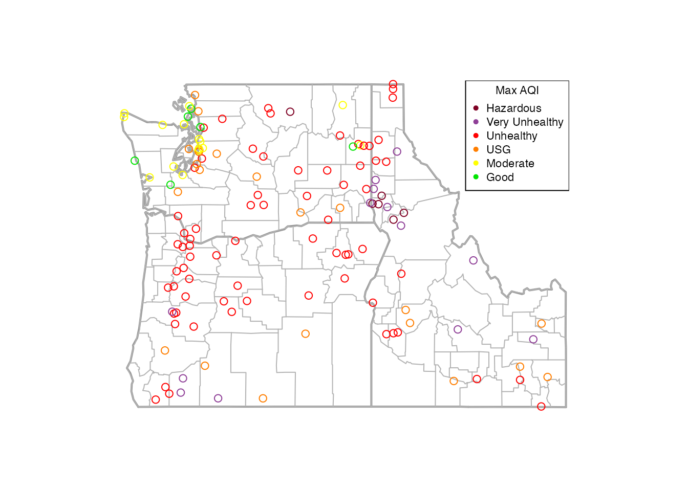
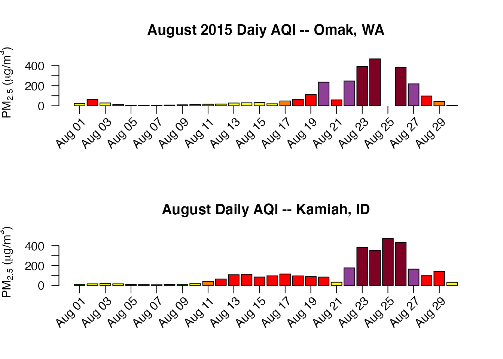

Maps and Timeseries Plots
Mazama Science
2020-02-12
Source:vignettes/Maps_and_Timeseries_Plots.Rmd
Maps_and_Timeseries_Plots.RmdThis vignette demonstrates the mapping and plotting capabilities of the PWFSLSmoke package.
In the summer of 2015 Washington state had several catastrophic wildfires that led to heavy smoke in eastern Washington and northern Idaho for quite a few days. We will show how the mapping and timeseries plotting functions in the PWFSLSmoke package can help us visualize the spatial and temporal extent of wildfire smoke during these events.
To begin, let’s have a broader look at AirNow ambient monitoring data for the Pacific Northwest (Washington, Oregon and Idaho) from June 1 through October 31, 2015. First, we create a 24-hr rolling mean for each monitor:
suppressPackageStartupMessages(library(PWFSLSmoke))
PacNW <- Northwest_Megafires
PacNW_24 <- monitor_rollingMean(PacNW, width = 24)Now we can create a map where each monitor is color coded by the maximum value of this 24-hr rolling mean. By default, AQI colors and labels are used but arguments to addAQILegend() allow users to specify their own.
monitor_map(PacNW_24, slice = max)
addAQILegend(title = "Max AQI", cex = 0.7)
The map shows that many areas of the Pacific NW had days with unhealthy air but a cluster of sites in Idaho had particularly bad air quality.
(Note that this is not the regulatory midnight-to-midnight AQI but a continuous 24-hr rolling mean.)
We can us an interactive “leaflet” map to zoom in and get more information:
# Commented out for the vignette
#monitor_leaflet(PacNW_24, slice = max)The monitor_map() and monitor_leaflet() plots show us pretty much the same information, except that the leaflet plot allows you to get monitor-specific metadata by clicking on a monitor. In this manner, we can assemble a list of monitorIDs in and around the Nez Perce Reservation in northern Idaho and generate a timeseries plot showing the terrible smoke in late August.
NezPerceIDs <- c("160571012_01", "160690012_01", "160690013_01",
"160690014_01", "160490003_01", "160491012_01")
NezPerce <- monitor_subset(PacNW, monitorIDs = NezPerceIDs)
monitor_timeseriesPlot(NezPerce, style = 'gnats')
addAQILines()
addAQILegend(cex = 0.7)
At this point it is clear that August is the month of interest so we’ll subset all of our existing ws_monitor objects to cover the month of August with full days according to West Coast time.
PacNW <- monitor_subset(PacNW, tlim = c(20150801, 20150831),
timezone = "America/Los_Angeles")
PacNW_24 <- monitor_subset(PacNW_24, tlim = c(20150801, 20150831),
timezone = "America/Los_Angeles")
NezPerce <- monitor_subset(NezPerce, tlim = c(20150801, 20150831),
timezone = "America/Los_Angeles")We can use the monitor_dailyBarplot() function to look at official, midnight-to-midnight AQI levels for each monitor during the month of August:
layout(matrix(seq(6)))
opar <- par(mar = c(1,1,1,1))
on.exit(par(opar))
for (monitorID in NezPerceIDs) {
siteName <- NezPerce$meta[monitorID, 'siteName']
monitor_dailyBarplot(
NezPerce,
monitorID = monitorID,
main = siteName,
axes = FALSE
)
}
We could also take a more automated approach and directly calculate the location with the worst acute smoke (worst hourly value) during this time period:
data <- PacNW$data[,-1] # omit 'datetime' column
maxPM25 <- apply(data, 2, max, na.rm = TRUE) # maximum value at each site
worstAcute <- names(sort(maxPM25, decreasing = TRUE))[1:6] # monitorIDs for the six worst sites in PacNW
dplyr::intersect(worstAcute, NezPerceIDs)## [1] "160571012_01" "160490003_01" "160491012_01"
PacNW$meta[worstAcute[1],c('siteName','countyName','stateCode')]## siteName countyName stateCode
## 160571012_01 Juliaetta E-sampler LATAH IDWe see that three of the sites we identified “by hand” also had the worst acute smoke of any sites in the Pacific NW. The site with the highest measured value of PM 2.5 for the month of august was Julietta in Latah county, Idaho.
Let’s do a similar analysis for chronic smoke. In this case we will calculate the number of days at or above the AQI “unhealthy” level:
PacNW_dailyAvg <- monitor_dailyStatistic(PacNW, FUN = mean, minHours = 20)
data <- PacNW_dailyAvg$data[,-1]
unhealthyDays <- apply(data, 2, function(x) { sum(x >= AQI$breaks_24[4], na.rm = TRUE) })
worstChronic <- names(sort(unhealthyDays, decreasing = TRUE))[1:6]
dplyr::intersect(worstChronic, NezPerceIDs)## [1] "160490003_01" "160571012_01" "160690014_01"
PacNW$meta[worstChronic[1],c('siteName','countyName','stateCode')]## siteName countyName stateCode
## 160490003_01 Kamiah-ID IDAHO IDThe area around the Nez Perce Reservation again had three of the worst sites for chronic smoke with the worst being Kamiah in Idaho county, Idaho.
Latah and Idaho counties were unfortunately downwind of several extraordinarily large Washington state wildfires in 2015 with the following ignition dates:
- Aug 11 – Kettle Complex
- Aug 13 – Grizzly Bear Complex
- Aug 13 – North Star
- Aug 14 – Chelan Complex
- Aug 15 – Okanogan Complex
A little googling and we can obtain a set of coordinates for these fires to use in a new static map of the August daily average maxima with fire icons at fire locations:
From this map we can see that the monitor in the Colville reservation also registered a daily AQI level of “hazardous” as it was in-between the two largest fires. The overall spatial pattern, however, shows that the worst impact from these large fires resulted from smoke drifting SE with the prevailing winds and bunching up in the valleys and plains just upwind of the Bitterroot mountains of northern Idaho.
We will now take a closer look at two tribal monitors:
Omak <- monitor_subset(PacNW, monitorIDs = "530470013_01")
Kamiah <- monitor_subset(PacNW, monitorIDs = "160490003_01")
layout(matrix(seq(2)))
monitor_dailyBarplot(
Omak,
main = "August 2015 Daiy AQI -- Omak, WA",
labels_x_nudge = 0.8,
labels_y_nudge = 250
)
monitor_dailyBarplot(
Kamiah,
main="August Daily AQI -- Kamiah, ID",
labels_x_nudge = 0.8,
labels_y_nudge = 250
)
layout(1)This ends the spatio-temporal exploration of smoke from Pacific NW mega-fire in 2015. We hope this inspires you to harness the mapping plotting functionality available in the PWFSLSmoke package.